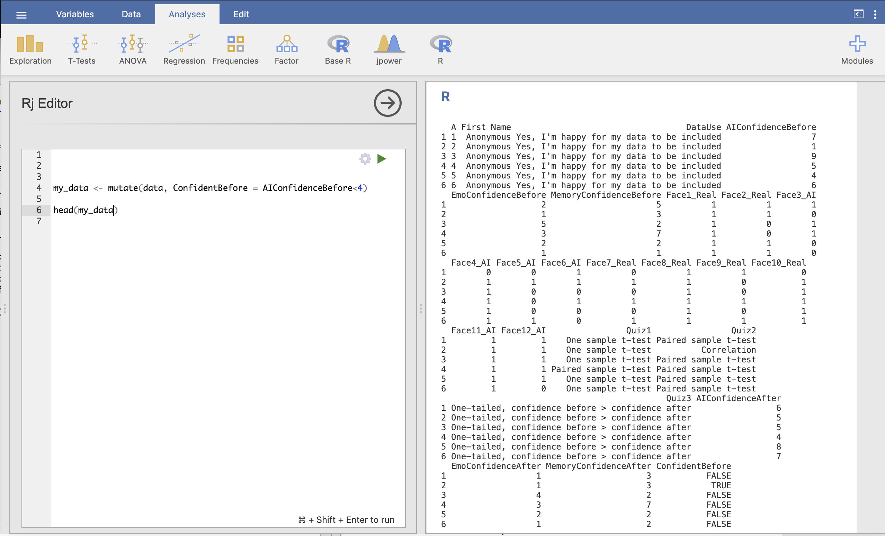
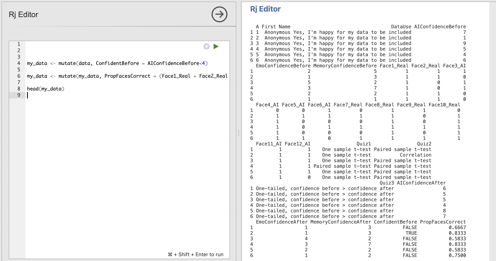
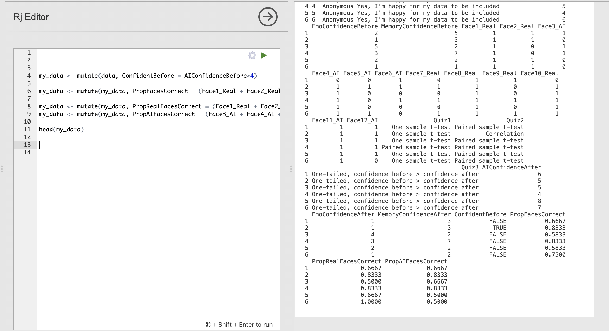
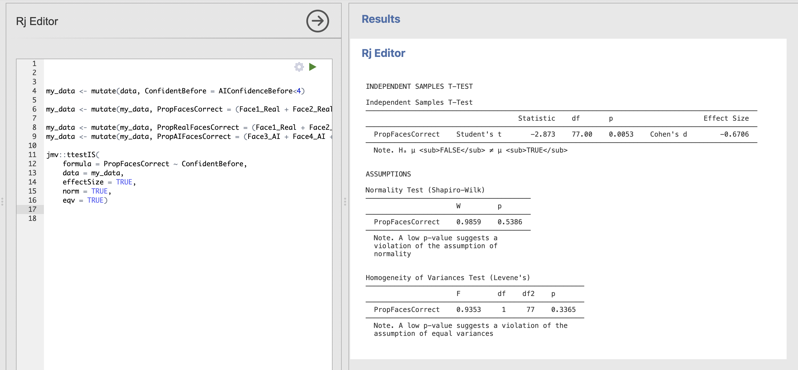
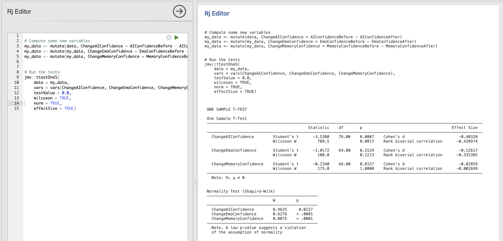

Week 5 : p-values and effect sizes
This week we will explore how to use the jmv package in R to test hypotheses about a dataset using t-tests and to compute effect sizes corresponding to those tests. We will use those effect sizes to help interpret the sensitivity and power of our experiments.
| Quantitative Methods | |
|---|---|
| Cohen’s d effect size | |
| Power analysis |
| Data Skills | |
|---|---|
Use mutate() in R to compute a new variable |
|
Compute t-tests using the jmv R package |
|
| Run a power analysis in Rj |
| Open Science | |
|---|---|
| Understand and validate code written by someone else | |
| Use power analysis to recommend a sample size for a replication |
1. The Dataset
Please note, this is the same dataset as we used in week 4 - but make sure that you load in the rmb-week-3_lecture-quiz-data_ai-faces-fixed.omv file from this week and NOT the week 4 file. It contains a small fix that we need for this week.
We’ll be working with the dataset we collected after the break during the lecture in Week 3. This is a partial replication of a study published in the journal Psychological Science (Miller et al. 2023). The original paper found the following results summarised in the abstract.
Recent evidence shows that AI-generated faces are now indistinguishable from human faces. However, algorithms are trained disproportionately on White faces, and thus White AI faces may appear especially realistic. In Experiment 1 (N = 124 adults), alongside our reanalysis of previously published data, we showed that White AI faces are judged as human more often than actual human faces—a phenomenon we term AI hyperrealism. Paradoxically, people who made the most errors in this task were the most confident (a Dunning-Kruger effect). In Experiment 2 (N = 610 adults), we used face-space theory and participant qualitative reports to identify key facial attributes that distinguish AI from human faces but were misinterpreted by participants, leading to AI hyperrealism. However, the attributes permitted high accuracy using machine learning. These findings illustrate how psychological theory can inform understanding of AI outputs and provide direction for debiasing AI algorithms, thereby promoting the ethical use of AI.
We ran a quiz that students in the lecture could join on their phones/laptops. There were two parts to the quiz:
The faces section included 12 faces that were either photographs or real people or AI generated images of people. The stimuli were taked from the materials released by (Miller et al. 2023) on the Open Science Framework. Responses were either ‘Real person’ or ‘AI generated’.

The confidence section asked participants to rate their confidence in their ability to do the following three things.
- Distinguish real photos of people from AI generated images (Experimental condition)
- Distinguish photos of happy people from photos of sad people (Emotional control condition)
- Distinguish photos of people you used to know in primary school from strangers (Memory control condition)
Scores were recorded on a scale from 1 (Completely confidence) to 10 (Not at all confident). The confidence section was repeated before and after the faces section to see if participants confidence changed as a result of doing the AI faces task
2. The Challenge
This week we will explore some factors that influence t-stats and p-values whilst introducing the concept of loops in R. We will finish by using effect sizes to compute a power analysis.
3. Compute new variables with mutate()
Last week, we used Jamovi to create several new variables that allowed us to run our analyses. We can do the same in a more transparent and reproducible way using R code.
We need to create both our proportion of correct faces across the 12 stimuli in one variable and a grouping variable which indicates whether each participant was confident in their ability to tell the difference between AI faces and real faces.
We can do both with the mutate() from the dplyr library, this provides functionality that lets us create, modify, and delete columns within a dataset. Take a look at the official documentation for mutate for more information.
When computing a new varaible with mutate() we three pieces of information.
- The dataset to work on
- The name of the new variable to be created
- The definition of how to compute the new variable for existing variables.
Compute the grouping variable
Let’s start with our grouping variable. Our three pieces of information are
- The dataset to work on - is
data, which refers to the original datasheet loaded into Jamovi - The name of the new variable - is
ConfidentBefore, the same as we used last week - The definition - is
AIConfidenceBefore<4, again the same as we used last week
We can combine these into a single line to create the variable. Note that we save the result into a new variable named my_data, we’ll use this from now on to avoid confusion with the original datasheet.
my_data <- mutate(data, ConfidentBefore = AIConfidenceBefore<4)We can check that this has done what we expected by running head to see the first few rows of the dataset.
head(my_data)The result should look like this:

We can see on in the results on the right hand side that the additional colume ConfidentBefore now appears with TRUE and FALSE values for each participant.
Compute the proportion of correct responses
Let’s do the same for total proportion of correctly identified faces. We can use the same principle as we used for the grouping variable and use mutate() along with the variable definition and name to create our new column.
This definition is pretty long as we have 12 different faces to work with! You can copy the whole line using the copy icon in the right hand side of the code box. Take a moment to look through and understand each part: which part is the Dataset, the Name and the Definition?
my_data <- mutate(my_data, PropFacesCorrect = (Face1_Real + Face2_Real + Face3_AI + Face4_AI + Face5_AI + Face6_AI + Face7_Real + Face8_Real + Face9_Real + Face10_Real + Face11_AI + Face12_AI) / 12)and validate the overall result using head() to make sure that my_data now has the column we expected.

The final column of the dataset is now PropFacesCorrect and contains the proportion of face trials that participant got right.
Can you compute variables containing the proportion of correct responses for photos of real people and AI generated faces separately?
Store the results in PropRealCorrectFaces for real faces and PropAICorrectFaces for AI generated faces.
We can use the code we wrote to compute the proportion of correct responses for all faces as a starting point.
Think about how you could modify this line to compute the result for either real or AI faces on their own? What would you need to change in the code?
The following code will compute the variables
my_data <- mutate(my_data, PropRealFacesCorrect = (Face1_Real + Face2_Real + Face7_Real + Face8_Real + Face9_Real + Face10_Real) / 6)
my_data <- mutate(my_data, PropAIFacesCorrect = (Face3_AI + Face4_AI + Face5_AI + Face6_AI + Face11_AI + Face12_AI) / 6)We’ve separated out the columns to sum all the real or AI faces together and changed the division to divide the results by 6 rather than 12.
Checking the results with head() should produce the following outputs with four additional columns!

4. Compute a t-test using R
We have the ingredients for our hypothesis test. Let’s use R to explore the following hypothesis (Hypothesis 2 from week 4).
Confident people are better at distinguishing AI faces from real faces
We can compute this test using the following code that calls ttestIS() - this is the function that computes independent samples t-tests. Read more about it on the ttestIS documentation page.
You can click the numbers by the definitions at the bottom to highlight the corresponding part of the code.
1jmv::ttestIS(
2 formula = PropFacesCorrect ~ ConfidentBefore,
3 data = my_data,
4 effectSize = TRUE)- 1
-
jmv::ttestISis the name of the R function that Jamovi uses to compute independent samples t-tests - 2
-
This tells
ttestISthe formula that defines the test we want to run. - 3
-
This tells
ttestISwhich dataset we want to analyse - 4
- This adds an additional effect size computation to the results
Most of this will be familiar from previous weeks, but let’s think about the formula in a little more detail.
In R, the tilde (~) is used in formula definitions to specify the relationship between variables, particularly in statistical modeling and data analysis. Here, the tilde separates the dependent variable (response) from the independent variables (predictors). In our example, PropFacesCorrect is the dependent variable and ConfidentBefore is our independent variable (grouping variable) - so this formula
PropFacesCorrect ~ ConfidentBeforeis essentially telling ttestIS() to “Compute the ttest on PropFacesCorrect using ConfidentBefore as our groups”.
We can now run all our code to get the results of the ttest - the code clearly tells the reader how all the relevant variables were computed and what hypothesis test has been run all in one screen.
Read through the ttestIS documentation page. How could you change your code to add the following assumption checks
- Test for homogeneity of variance
- Test for normal distribution
The documentation page contains a list of all the possible information that we can pass as an input to our ttestIS() function call. Each item in the list corresponds to the options available in the Jamovi dialogue box.
Have a look at the norm and eqv definitions. What would you need to add to the function call to run these additional checks?
The following code will compute all the checks in addition to the t-test.
jmv::ttestIS(
formula = PropFacesCorrect ~ ConfidentBefore,
data = my_data,
effectSize = TRUE,
norm = TRUE,
eqv = TRUE) The results should look like this:

Do the assumptions for Student’s t-test hold for this data?
Your script might be getting quite long at this point! It is always a good idea to keep code neat and tidy where possible so that other people are able to read it, and so that we can read it if we come back to the analysis in the future.
There are many ways to keep things organised in a script. Here are two good hints, code comments can organise your script without changing the output and print() statements can help organise your code and the outputs.
Code comments
Any line of R code that starts with a hashtag is called a ‘comment’. The writing on this line is there for our information and will not be run by the computer. Adding code comments is a useful way to annotate your code indicating what each line or each section is doing. For example:
# This is code comment
# Compute which participants were more confident than the median
my_data <- mutate(data, ConfidentBefore = AIConfidenceBefore<4)
This will make it easier to understand what the coding is doing in future.
Print statements
We can use the print() function to help organise our code as well. The text within the call to print() will not be executed by the computer but will simply be printed into the output console. This can be useful to break the output of your code into sections and to inlcude additional information about the analysis next to the outputs themselves.
For example:
print('Hypothesis 1')
print('Confident people are better at distinguishing AI faces from real faces')
jmv::ttestIS(
formula = PropFacesCorrect ~ ConfidentBefore,
data = my_data,
effectSize = TRUE)This code will print out information about the hypothesis next to the outputs.
A full cleaned and commented version of our code might look like this.
# Compute which participants were more confident than the median
my_data <- mutate(data, ConfidentBefore = AIConfidenceBefore<4)
# Compute the proportion of all faces each participant got right
my_data <- mutate(my_data, PropFacesCorrect = (Face1_Real + Face2_Real + Face3_AI + Face4_AI + Face5_AI + Face6_AI + Face7_Real + Face8_Real + Face9_Real + Face10_Real + Face11_AI + Face12_AI) / 12)
# Compute the proportion of REAL faces each participant got right
my_data <- mutate(my_data, PropRealFacesCorrect = (Face1_Real + Face2_Real + Face7_Real + Face8_Real + Face9_Real + Face10_Real) / 6)
# Compute the proportion of AI faces each participant got right
my_data <- mutate(my_data, PropAIFacesCorrect = (Face3_AI + Face4_AI + Face5_AI + Face6_AI + Face11_AI + Face12_AI) / 6)
# Hypothesis test
print('Hypothesis 1')
print('Confident people are better at distinguishing AI faces from real faces')
jmv::ttestIS(
formula = PropFacesCorrect ~ ConfidentBefore,
data = my_data,
effectSize = TRUE)and running this code produces the following outputs including the test from our print statements
Nice and clear what is happening at each stage! There is no perfect or ‘correct’ way to tidy up your code (though some people can get opinionated about this…). Choose a mix of comments and print statements that makes sense to you.
Extend your code to test a second hypothesis.
Confident participants are more accurate than unconfident participants when identifying photos of real faces.
Include some code comments and print statements
This will require a second indenpendent samples t-test asking whether the mean proportion correct value for only real faces is different between our confident and not-confident groups.
Use the previous t-test as a starting point, can you copy this and modify it to do what we need?
The following code will test the new hypothesis with some comments and print statements
# Hypothesis test
print('Hypothesis 2')
print('Confident participants are more accurate than unconfident participants when identifying photos of real faces.')
jmv::ttestIS(
formula = PropRealFacesCorrect ~ ConfidentBefore,
data = my_data,
effectSize = TRUE) The output of the whole script should now look like this.
Note how the print statements help to separate the results into interpretable chunks.
Now we’re going to explore how the size of the data sample changes the t-values that w
Introduce slice_sample Introduce simple loops
5. Analysis from a friend
Imagine that of your friends has been running some analyses on this dataset and would like you to check over their work. They send you the following R code that they have put together.
# Compute some new variables
my_data <- mutate(data, ChangeAIConfidence = AIConfidenceBefore - AIConfidenceAfter)
my_data <- mutate(my_data, ChangeEmoConfidence = EmoConfidenceBefore - EmoConfidenceAfter)
my_data <- mutate(my_data, ChangeMemoryConfidence = MemoryConfidenceBefore - MemoryConfidenceAfter)
# Run the tests
jmv::ttestOneS(
data = my_data,
vars = vars(ChangeAIConfidence, ChangeEmoConfidence, ChangeMemoryConfidence),
testValue = 0.0,
wilcoxon = TRUE,
desc = TRUE,
norm = TRUE)Let’s think about this code a bit, your friend didn’t really explain the plan…
Open a new Rj window and run this code before going any further! Take a moment to read through the code and decide what it is doing.
They have written the following about the results.
A one sample t-test found that the change in participant confidence in distinguishing AI faces from real faces was significantly reduced after performing the task. The difference in confidence before and after the task (M=-1.1, SD=2.7) was significantly below zero, t(76) = 3.538, p = 0.0007. In contrast there was no change after the task confidence in emotion recognition (M=-.017, SD=1.341), t(76) = -1.012, p = 0.313 and face memory (M=-0.02985, SD=1.044), t(76) = -0.234, p = 0.816.
Let’s think about whether this is accurate.
Computing statistics and accurately reporting the results takes a lot of precision! take your time when writing code and results sections - make sure to check and double check your work as you go…
6. Compute effect sizes for t-tests
Let’s think more about effect sizes - computing effect sizes in Jamovi and R is really easy. Simply click the check box to add ‘Effect size’ under the ‘Addtional Statistics’ section of the Jamovi window - or add effectSize = TRUE to the function call in R (we’ve already been doing this above!).
Update your friend’s code to include computation of effect sizes - the results should appear in the t-test results table on the right.

There are effect sizes computed for every t-test and its non-parametric alternatives.
- Cohen’s d is the parametric effect size corresponding to Student’s t-test
- Rank Biserial Correlation is the non-parametric effect size corresponding to Wilcoxon’s test.
Though they have methodological differences, these effect sizes can be interpreted in the same way as a measure of the magnitude of an effect.
Remember that this is different to the t-value which is a measure of evidence against the null hypothesis. The important difference is that we can have strong evidence against the null either as the difference is large or if we have measured a small difference very precisely. The effect size only cares about the size of the difference between conditions.
Note that Jamovi/R provide a ‘signed’ effect size indicating the direction of the effect in the same way that a t-statistic does. For the following work we can ignore this sign and focus on the magnitudes only. In other words, we’ll consider an effect size of +0.5 or -0.5 to indicate the same magitude of effect.
The creator of many of our classic effect size measures provided a guideline for what might be considered a ‘small’ or a ‘large’ effect.
| Effect Size | Cohen’s d | Interpretation |
|---|---|---|
| Small | 0.2 | Small effect |
| Medium | 0.5 | Medium effect |
| Large | 0.8 | Large effect |
These can be useful guidelines - through they have been criticised strongly for both the arbitrary nature of the thresholds and for over-simplifying interpretation of effect sizes. We can still use them as an informal indicator to help us quickly interpret our results.
7. Use an effect size for a sensitivity & power analysis
One core application for effect sizes is that we can use the results to inform our sample size planning for future studies. we can do this with four linked pieces of information
- Effect Size this is our effect size, usually Cohen’s d for analyses in RM-B
- Significance Thresold - this is the ‘alpha’ level at which we would consider a result significant, usually 5% or 0.05.
- Power - this is probability of correctly detecting an effect if one exists in the data, we usually want 80% power.
- Number of datapoints (N) - this is our sample size.
These four pieces of information are linked such that if we have any three of these values we can always compute the fourth.
This lets us do some very useful calculations to see how well our dataset is enabling us to answer our hypothesis and to plan for future studies. For examples
If we know the effect size, significance threshold and number of participants in a study, we can compute the power to tell us the probability that we can correctly detect an effect. This is known as ‘sensitivity’.
or
If we want to compute how many participants we’ll need in a future study and we already know the effect size from previous literature, we can specify the power and significance threshold we want and compute the number of participants that we’ll need.
Very useful! We can compute these different values using a Jamovi module known as ‘jpower’
Click through the ‘Modules’ button on the top right of the Jamovi ribbon. Click to the list of ‘Available’ modules and install ‘jpower’
Click through to open the jpower menu and select a ‘one-sample t-test’ from the options. You should see the following dialogue box
Let’s take a moment to understand the options.
First - notice that we have the four pieces of information listed near the top of the options.
| jpower menu | Interpretation |
|---|---|
| Minimally interesting effect size (δ) | Effect size |
| Minimum desired power | Power |
| N | Number of participants |
| α (type 1 error rate) | Significance threshold |
By default, one of these options is grayed out and not modifible. This is as jpower works to compute one value at a time whilst asking you to specify the other three. By default, we’re computing N as specified by the ‘Calculate’ drop down menu at the top of the dialogue box. Try changing this to calculate one of the other values and notice that the greyed out box changes each time.
Let’s run through an example. Say that we want to answer the following question:
What is the probability the
ChangeAIConfidencehas been correctly detected in our previous analysis.
We should run through the following steps.
- Select that we want to Calcuate ‘Power’ in the top drop down menu.
- Set the ‘Minimally interesting effect size (δ)’ to our observed effect size from before. This is
0.429(ignoring the sign) - Set the ‘N’ to
77- this is the number of participants in the test (degrees of freedom are 76) - Set ‘α (type 1 error rate)’ to
0.05- this is usually the default
The results should appear automatically.
jpower gives us some really useful explanatory text along with the results. Read this carefully to understand what is going on. Firstly,
The purpose of a power analysis is to evaluate the sensitivity of a design and test. You have chosen to calculate the sensitivity of the chosen design for detecting the specified effect size.
This clarifies the type of analyses we have run - we want to compute the sensitivity of our analysis given particular data and effect size. Next the results are summarised
A design with a sample size of 77 can detect effect sizes of δ ≥ 0.429 with a probability of at least 0.96, assuming a two-sided criterion for detection that allows for a maximum Type I error rate of α= 0.05.
This is the critical information. This tells us that the power is 0.96 for our analysis, indicating that we have a 96% chance of correctly detecting an effect size at least as large as the one from our test. Great news!
Finally, the ‘Power by Effect size’ table tells us the power we would have for different effect sizes. For example, in this case if we have an effect size of 0.3 - we would have power between 50% and 80%. If the effect size were 0.2 we would have less than 50% power.
What is the sensitivity (power) of the effect size estimated by Cohen’s d for the ChangeEmoConfidence variable?
Take a look at our previous results. Cohen’d d for ChangeEmoConfidence was -0.126.
Our estimated power for the ChangeEmoConfidence is only 19.4%.
A design with a sample size of 77 can detect effect sizes of δ ≥ 0.126 with a probability of at least0.194, assuming a two-sided criterion for detection that allows for a maximum Type I error rate of α = 0.05.
This is the practical consequence of effect sizes! The smaller effect for ChangeEmoConfidence is harder to detect than the larger value for ChangeAIConfidence so we have a much lower chance of getting the right answer.
It might be the case that our face recognition really does change participants confidence in recognising emotional faces, and our study simply doesn’t have enough participants to detect the change with statistical confidence. Perhaps we should consider running a larger study?
If we assume that our value for Cohen’s d is accurate and we assume that there really is an effect to be detected (these are pretty brave assumptions!), how many participants would a future study need to have 80% chance of correctly detecting the effect?
We’ll need to change our analysis to calculate ‘N’ rather than ‘Power’ using the drop down menu at the top. Can you specify the power?
We would need at least 497 participants to reject the null hypothesis if the estimated effect size for the change in emotional face recognition before and after our task is accurate! that is a lot….
We would need a sample size of 497 to reliably (with probability greater than 0.8) detect an effect size of δ ≥ 0.126, assuming a two-sided criterion for detection that allows for a maximum Type I error rate of α = 0.05.
This information suggests that this looking for differences in emotional face confidence is probably not worth pursuing futher. Our experiment wasn’t perfect but this effect is so small that it is likely to be of little to no practical significance.
8. Summary
We have explored some new methods for creating new variables and running t-tests with effect sizes using R code. The R code we wrote is a really clear way to specify how variables were manipulated and which tests were run. Quite complex analyses with several stages can be clearly expressed this way.
Finally, we used effect sizes to explore the power and sensitivity of our experiment and explore the possiblity of a follow up study.